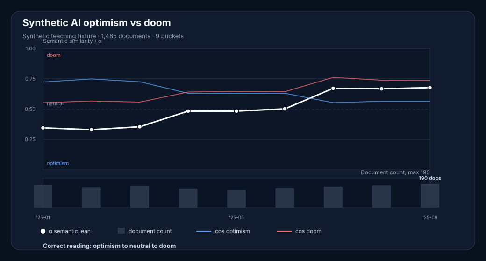

Chart Interpretation Quiz
A small game for testing whether you read semantic trend graphs as evidence, or as decorative permission to say the thing you already wanted to say.
Pick the safest interpretation.
Not the most exciting one.
Not the most exciting one.
Watch document counts.
A low-volume spike is where confidence goes to die.
A low-volume spike is where confidence goes to die.
Check raw margins.
If both poles are high and close, weaken the claim.
If both poles are high and close, weaken the claim.

What is the safest interpretation?
Result
low-volumenull controlraw cosine marginscreenshot safety